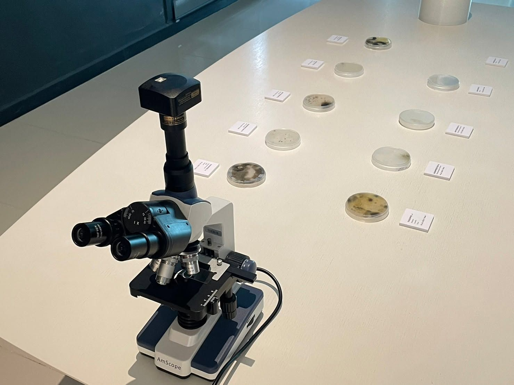

Place and Space are not just a physical factor; it also carries meanings from experiences, emotions, and feelings of the individuals who exist within that particular space. We have experimented with exploring the Place and Space we inhabit through the collection of living samples, which are organisms living with us, often unnoticed or unrecognized. We have conducted experiments in DIY Biology, using simple equipment to conduct scientific experiments. Petri dishes, which store the data of each person's Place and Space, act as if they are recording ‘vinyl’ capturing stories. These stories are then presented in the form of visual and sounds generated from each individual Petri dish.
Photos: Syntopia: International Symposium on Media Arts and Design